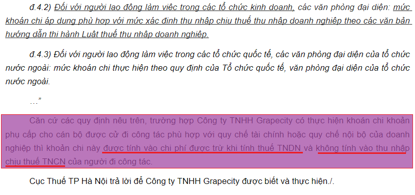
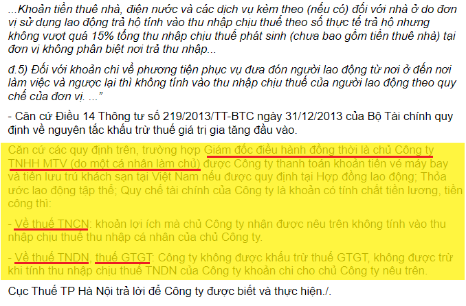

Để đưa chi phí công tác phí khi đi công tác vào chi phí hợp lý được trừ khi tính thuế TNDN và được khấu trừ thuế GTGT thì cần có đầy đủ hóa đơn chứng từ hợp pháp hợp lệ, cụ thể như sau:
1. Các hóa đơn, chứng từ trong quá trình đi công tác như: Hóa đơn GTGT, Vé máy bay, thẻ lên máy bay, vé tàu xe, hóa đơn phòng nghỉ, hóa đơn taxi,….(Nếu từ 5 triệu trở lên phải thanh toán không dùng tiền mặt)
Xem thêm: Chi phí vé máy bay hợp lý
2. Quyết định cử đi công tác (Nêu rõ tên cán bộ nhân viên trong DN được cử đi, nội dung, thời gian, phương tiện).
Xem thêm: Mẫu Quyết định cử đi công tác
3. Quy chế tài chính hoặc quy chế nội bộ của Công ty (Quy định rõ về việc cho phép NLĐ được phép thanh toán các khoản công tác phí bằng dịch vụ thanh toán không dùng tiền mặt và các khoản này sẽ được doanh nghiệp thanh toán lại cho NLĐ)
4. Giấy đi đường có xác nhận của Doanh nghiệp cử đi công tác (ngày đi, ngày về) và nơi được cử đến công tác (ngày đến, ngày đi) hoặc xác nhận của nhà khách nơi lưu trú.
Xem thêm: Mẫu Giấy đi đường.
5. Mức Công tác phí hợp lý
- Căn cứ theo Nghị định 320/2025/NĐ-CP hướng dẫn luật thuế TNDN mới nhất hiện nay, thì không có quy định về mức công tác phí bao nhiêu là hợp lý, chỉ quy định có đầy đủ hóa đơn, chứng từ chứng minh khoản công tác phí đó phục vụ cho hoạt động sản xuất kinh doanh là được.
- Nếu Doanh nghiệp KHOÁN chi công tác phí cho nhân viên trong Cty đi công tác thì thực hiện theo Quy chế tài chính/nội bộ của Cty (Nếu cao hơn mức quy định trong quy chế => Thì phần cao hơn sẽ bị loại ra khỏi chi phí được trừ)
|
Quy định về Chi phí công tác phí hiện nay: Căn cứ điểm h điều 10 Nghị định 320/2025/NĐ-CP hướng dẫn Luật thuế TNDN quy định: h) Chi phụ cấp cho người lao động đi công tác, chi phí đi lại và tiền thuê chỗ ở cho người lao động đi công tác nếu có đầy đủ hóa đơn, chứng từ được tính vào chi phí được trừ khi xác định thu nhập chịu thuế. Trường hợp doanh nghiệp cử người lao động đi công tác (bao gồm công tác trong nước và công tác nước ngoài) nếu có phát sinh chi phí từ 05 triệu đồng trở lên mà các khoản chi phí này được thanh toán bởi cá nhân bằng dịch vụ thanh toán không dùng tiền mặt thì xác định đủ điều kiện là hình thức thanh toán không dùng tiền mặt của doanh nghiệp và tính vào chi phí được trừ nếu đáp ứng đủ các điều kiện sau:
Trường hợp doanh nghiệp có khoán tiền đi lại, tiền ở, phụ cấp cho người lao động đi công tác và thực hiện đúng theo quy chế tài chính hoặc quy chế nội bộ của doanh nghiệp thì được tính vào chi phí được trừ khoản chi khoán tiền đi lại, tiền ở, tiền phụ cấp; |
Xem thêm: Chi phí mua hàng thanh toán qua thẻ cá nhân
Tham khảo thêm:
1. Theo Công văn Số: 5697/CTBNI-TTHT ngày 22/12/2023 của Cục thuế tỉnh Bắc Ninh
"Căn cứ các quy định nêu trên, trường họp Công ty phát sinh các khoản chi công tác phí cho người lao động như: tiền vé máy bay, tiền khách sạn, chi phí ăn uống đi lại, tiền công tác phí (theo mức khoán chi), nếu phục vụ cho hoạt động sản xuất kinh doanh, có đầy đủ hóa đơn chứng từ, phù hợp với quy chế tài chính hoặc quy chế nội bộ của Công ty theo quy định tại Điều 6 Thông tư số 78/2014/TT-BTC ngày 18/06/2014 (đã được sửa đổi, bổ sung tại Điều 4 Thông tư số 96/2015/TT-BTC ngày 22/06/2015 của Bộ Tài chính) được tính vào chi phí được trừ khi xác định thu nhập chịu thuế TNDN và không phải tính vào thu nhập chịu thuế TNCN của người lao động.
2. Theo Công văn số 3997/TCT-DNL ngày 16/9/2014 của Tổng cục thuế:
"Trường hợp doanh nghiệp trực tiếp mua vé máy bay qua website thương mại điện tử cho người lao động đi công tác để phục hoạt động sản xuất kinh doanh của doanh nghiệp thì thực hiện theo quy định tại điểm 8 Khoản 2 Điều 6 Thông tư số 78/2014/TT-BTC nêu trên.
- Trường hợp doanh nghiệp cử người lao động đi công tác phục vụ hoạt động sản xuất kinh doanh của doanh nghiệp và giao cho cá nhân tự mua vé máy bay, thanh toán bằng thẻ ATM hoặc thẻ tín dụng mang tên cá nhân, sau đó về thanh toán lại với doanh nghiệp nếu doanh nghiệp có đủ hồ sơ, chứng từ chứng minh khoản chi phí này phục vụ cho hoạt động sản xuất kinh doanh của doanh nghiệp gồm:
- vé máy bay,
- thẻ lên máy bay (trường hợp thu hồi được thẻ),
- các giấy tờ liên quan đến việc điều động người lao động đi công tác có xác nhận của doanh nghiệp,
- quy định của doanh nghiệp cho phép người lao động thanh toán công tác phí bằng thẻ cá nhân do người lao động được cử đi công tác là chủ thẻ và thanh toán lại với doanh nghiệp,
- chứng từ thanh toán tiền vé của doanh nghiệp cho cá nhân mua vé
- kèm theo chứng từ thanh toán không dùng tiền mặt của cá nhân tham gia hành trình vận chuyển.
-> thì doanh nghiệp được kê khai khấu trừ thuế GTGT đầu vào và được tính vào chi phí được trừ khi tính thuế TNDN. Doanh nghiệp chịu trách nhiệm về tính hợp pháp của các hồ sơ, chứng từ nêu trên."
3. Công văn số 10858/CTHN-TTHT ngày 09/04/2021 của Cục thuế Tp. Hà Nội:

4. Theo Công văn 8199/CT-TTHT ngày 24/08/2017 của Cục thuế Thành phố Hồ Chí Minh:
- Căn cứ các quy định nêu trên, trường hợp Công ty theo trình bày mua vé máy bay khứ hồi cho nhân viên đi công tác tại nước ngoài (Đức) của hãng hàng không East Sea Travel & Air Service GmBH thông qua Website của Hãng hàng không (Hãng không có đại lý tại Việt Nam) thì khi thanh toán cho Hãng, Công ty có nghĩa vụ khấu trừ, khai và nộp thuế (TNDN) nhà thầu theo tỷ lệ 2% trên doanh thu, thuế GTGT không phải khấu trừ đối với hoạt động vận tải quốc tế.
Xem thêm: Cách tính thuế nhà thầu mới nhất
- Về chi phí đi công tác ở nước ngoài như: Tiền khách sạn, ăn uống,… của nhân viên nếu Công ty đáp ứng điều kiện quy định tại Điều 4 Thông tư số 96/2015/TT- BTC thì Công ty được tính vào chi phí được trừ khi tính thuế TNDN.
Lưu ý: Những hoá đơn chứng từ phát sinh tại nước ngoài phải được dịch ra Tiếng Việt
- Đối với chi phí thuê taxi cho nhân viên đi công tác, bắt buộc phải có hóa đơn do hãng vận tải xuất giao cho Công ty để làm căn cứ hạch toán (Theo Công văn số 8965/CT-TTHT ngày 15/9/2017 của Cục Thuế TP. HCM)
5. Theo Công văn Số: 9597/CT-TTHT ngày 03/10/2017 của Cục thuế Thành phố Hồ Chí Minh có mở rộng thêm về các khoản chi phí trong công tác phí
|
Trường hợp Công ty theo trình bày cử người lao động đi công tác phục vụ hoạt động sản xuất kinh doanh của Công ty, ngoài chi phí vé tàu, xe, máy bay, taxi, chi phí khách sạn có đầy đủ hóa đơn, chứng từ hợp lệ Công ty còn chi trả các phụ cấp xăng xe cho nhân viên công tác trong khu vực TP. Hồ Chí Minh, phụ cấp sinh hoạt phí để hỗ trợ chi phí ăn uống cho nhân viên đi công tác tỉnh và nước ngoài, phụ cấp sinh hoạt phí đối với nhân viên kinh doanh tại thị trường nước ngoài, các khoản phụ cấp cho người lao động đi công tác này được quy định cụ thể tại quy chế tài chính hoặc quy chế nội bộ của Công ty và được thực hiện đúng theo các quy chế này thì Công ty được tính vào chi phí được trừ khi xác định thu nhập chịu thuế TNDN. Các khoản khoán chi công tác phí nêu trên không tính vào thu nhập chịu thuế TNCN của người lao động.
Đối với khoản khoán chi tiền điện thoại theo mức cố định hàng tháng cho cá nhân nếu được ghi cụ thể điều kiện được hưởng và mức được hưởng tại một trong các hồ sơ sau: Hợp đồng lao động; Thỏa ước lao động tập thể; Quy chế tài chính của Công ty; Quy chế thưởng do Chủ tịch Hội đồng quản trị, Tổng giám đốc Công ty quy định theo quy chế tài chính của Công ty thì khoản khoán chi này Công ty được tính vào chi phí được trừ khi xác định thu nhập chịu thuế TNDN và tính vào thu nhập chịu thuế TNCN của người lao động.
|
CHÚ Ý: Đối với Công ty TNHH MTV do cá nhân đó làm chủ
Theo Công văn 5421/CT-TTHT ngày 16/2/2017 của Cục thuế TP Hà Nội quy định về Chi phí vé máy bay, tiền lưu trú đối tại Việt Nam cho Giám đốc điều hành đồng thời là Chủ Công ty TNHH MTV (do một cá nhân làm chủ) -> Thì DN KHÔNG được khấu trừ thuế GTGT và đưa vào chi phí hợp lý khi tính thuế TNDN. cụ thể như sau:

Xem thêm: Các khoản chi phí không được trừ khi tính thuế TNDN
------------------------------------------------------------